全て
/
サイト
/
アプリ


4N はまちゃん
普段はグラフィックデザイン を学んでいます！ もっとデザインの幅をもっと広げたいと思って webデザインを勉強中です◎今までの作品をまとめたポートフォリオ を制作しました！色んな私の面を知ってもらいたい、という想いがあります。 初めてなのでまだまだですけど是非ご覧ください～！
| target | 初めて私を知る人(SNSの人) |
| opinion | 自分/自分の作品を知ってもらう |
| concept | 私の面 |
※このサイトはパソコンでのみご覧いただけます。
サイトを見る
4N よねちゃん
自分の過去の制作物をまとめた、ポートフォリオサイトを制作しました。作品が主役となるようにシンプルなデザインでまとめつつ、背景柄やメニューボタンをやわらかい印象にすることで、自分のデザインの特徴と合うようにまとめています。 また、より多くの方に見てもらえるようにレスポンシブ対応にしています。
| target |
自分に興味をもってくれた人 お仕事で関わる人 |
| opinion | 自分の制作物を紹介する |
| concept | 自分を伝えるWEBサイト |
3M いとしのエリー
何かコメント。 サイトの概要とかこだわり、見所等々。 つらつらつらつらつらつらつらつらつらつらつらつらつらつら。 つらつらつらつらつらつらつらつらつらつらつらつらつらつら。 つらつらつらつらつらつらつらつらつらつらつらつらつらつら。 つらつらつらつらつらつらつらつらつらつらつらつらつらつら。
| target | ターゲット |
| opinion | 目的 |
| concept | コンセプト |
 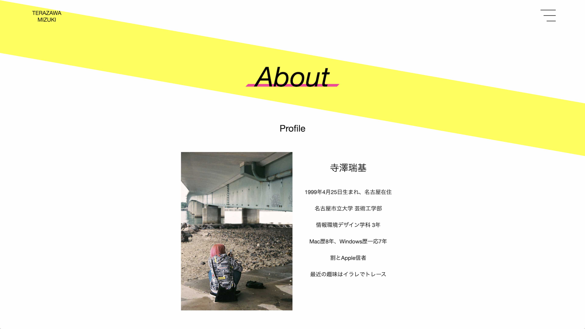
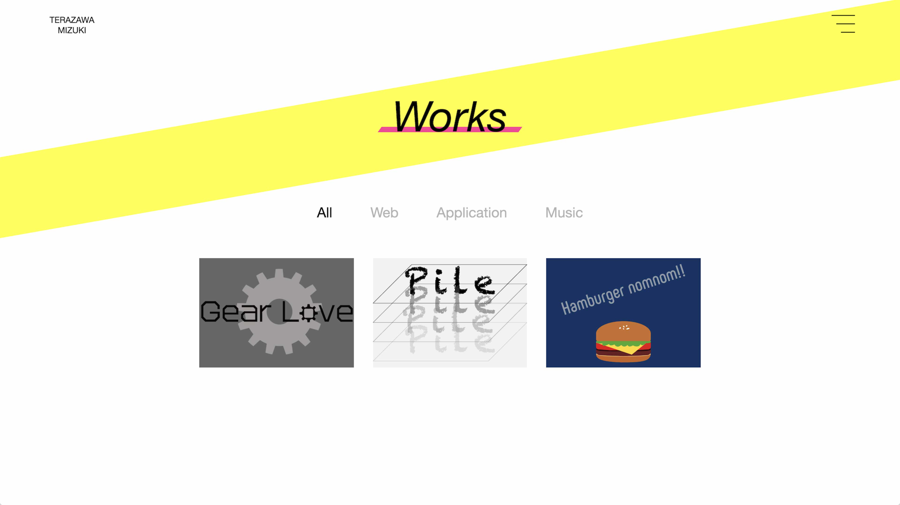
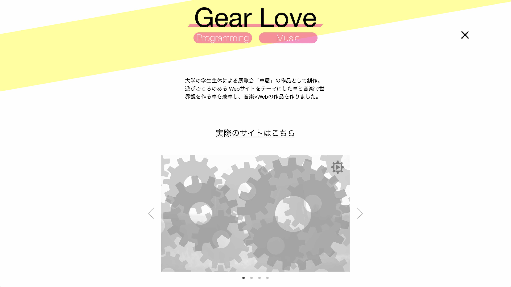
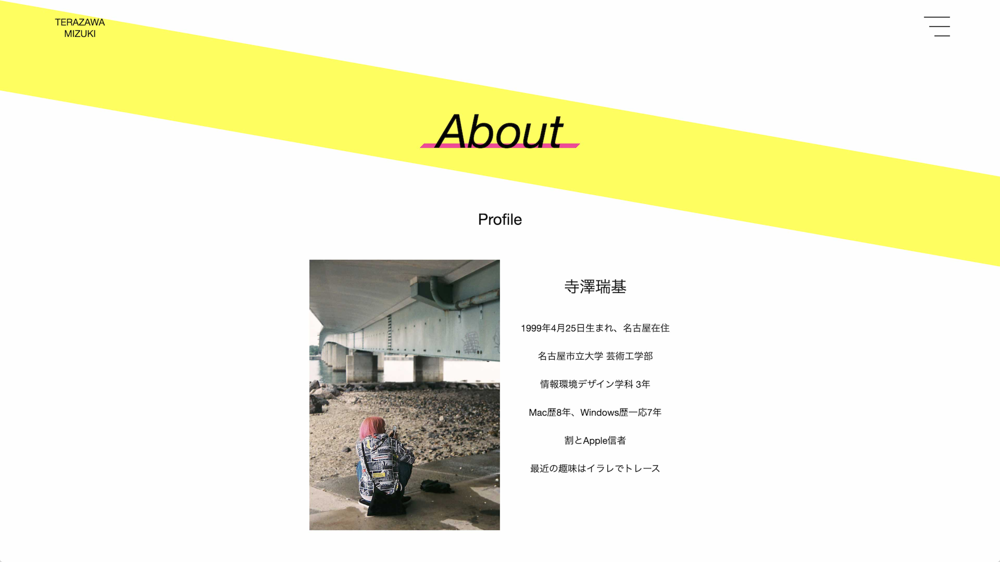
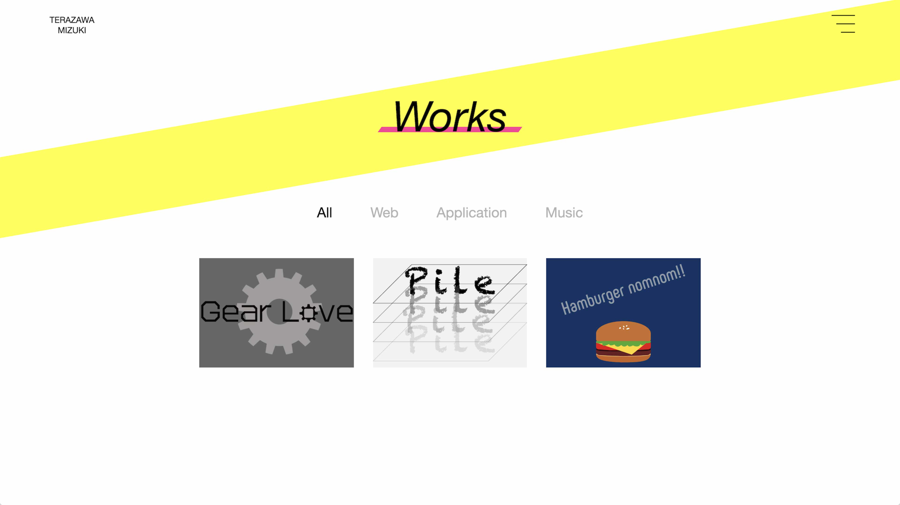
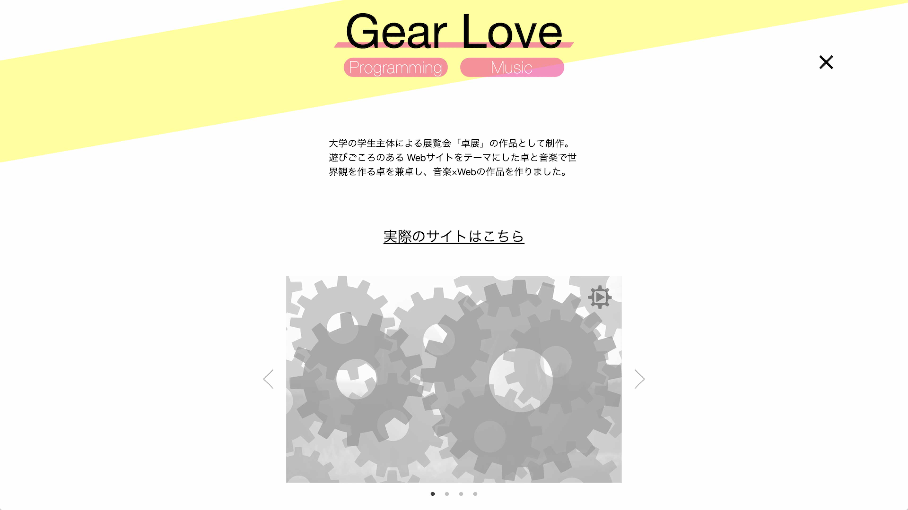
3M 不協卍和音
自身のポートフォリオサイトです。デザイン、コーディングを全て1人で行いました。 じっくり見てもらうを軸に見やすいデザイン、レイアウトを意識しました。 また、自身のスキル欄でアニメーションを用いて一目見てわかりやすい工夫もしました。
| target | これからの就活においての企業さん |
| opinion | 自己紹介 |
| concept | じっくり見てもらう |
3M 不協卍和音
自己の思いを不特定多数に発信することができるサービスです。一般的にボトルメールとして知られているものの電子版のようなものです。
| target | 周りの人など特定の誰かには言えないけど吐き出したいことがある、承認欲求に疲れた、批判やレスポンスを求めない人 |
| opinion | 目的 |
| concept | コンセプト |
※アプリはパソコンではご覧いただけません。
アプリを見る
3M 頭皮にやさしく
シンプルで波打ってるポートフォリオサイトです。地味にこだわったのがカラーリングで、当時モンスターを暴飲していたので僕を表すカラーとして今最も適しているのではと思い、黒と緑のカラーにしました。それと、僕はHelvetica大好きお兄さんなので、全てHelveticaで統一しました。また、このサイトは随時アップデート予定なので、今後の僕の活躍に期待して欲しいです。
| target | 企業の方、就活用 |
| opinion | 大学生活における代表作をパッと見られるようにする |
| concept | エラーが起きにくく、閲覧しやすいポートフォリオサイト |
2M しゃちほこ・パッチム
何かコメント。 サイトの概要とかこだわり、見所等々。 つらつらつらつらつらつらつらつらつらつらつらつらつらつら。 つらつらつらつらつらつらつらつらつらつらつらつらつらつら。 つらつらつらつらつらつらつらつらつらつらつらつらつらつら。 つらつらつらつらつらつらつらつらつらつらつらつらつらつら。
| target | ターゲット |
| opinion | 目的 |
| concept | コンセプト |
3M ニトリ
都会に店を構え、インスタ映えするドリンクを売っているお店のWebサイトです。"カワイイ"をテーマに、「本当にこんなお店があったらいいな」と思ってもらえるように制作しました！ カワイイものが好きな男の子、女の子！友達と寄り道するのが好きな人！ぜひ見てみてください！
| target | インスタ大好きJK･JD |
| opinion |
ホームページの作成による集客！ ターゲットの目を引き、話題をつくる！ |
| concept | カワイイを＋するドリンク |
2M ラムこ
何かコメント。 サイトの概要とかこだわり、見所等々。 つらつらつらつらつらつらつらつらつらつらつらつらつらつら。 つらつらつらつらつらつらつらつらつらつらつらつらつらつら。 つらつらつらつらつらつらつらつらつらつらつらつらつらつら。 つらつらつらつらつらつらつらつらつらつらつらつらつらつら。
| target | ターゲット |
| opinion | 目的 |
| concept | コンセプト |
 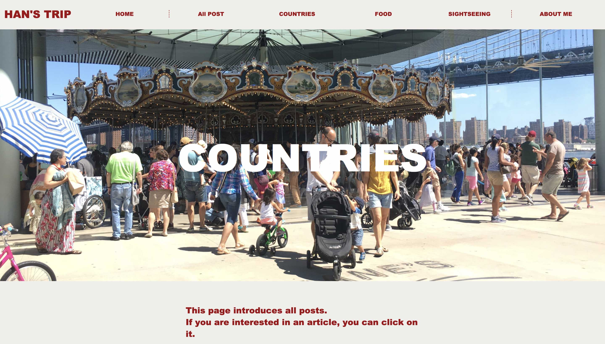
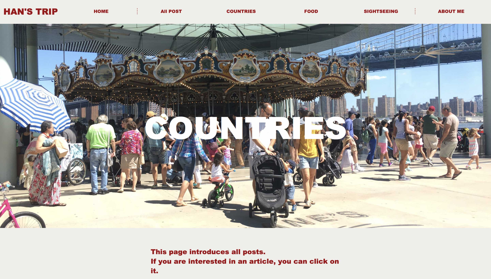
 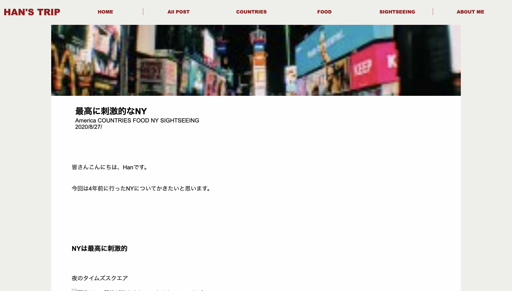
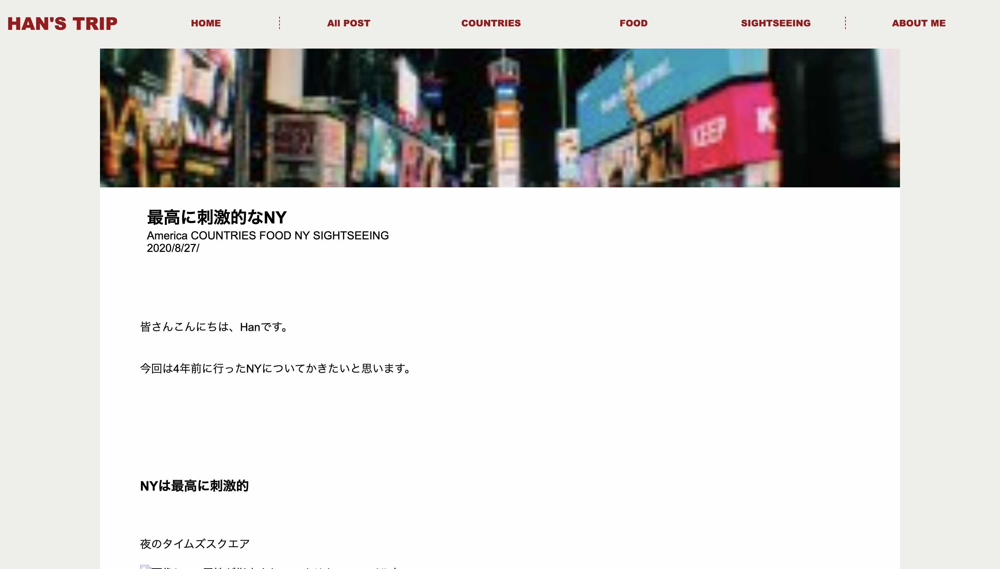
2M 半月板
今までに世界７カ国、計１２回海外旅行をしている私が、海外旅行に行きたい！けど海外旅行についてよくわからない！などといった大学生のために書いた海外旅行ブログです。 載せているほとんどの写真や話は私が実際にその国で撮ったものや、実際に体験した話です。 このブログを見て海外旅行に行ってみたいかも、と思っていただけたら嬉しいです！
| target | 大学生 |
| opinion |
海外旅行に興味を持ってもらう 海外旅行の際に参考にしてもらう |
| concept | 大学生が書く、大学生のための海外旅行ブログ |
 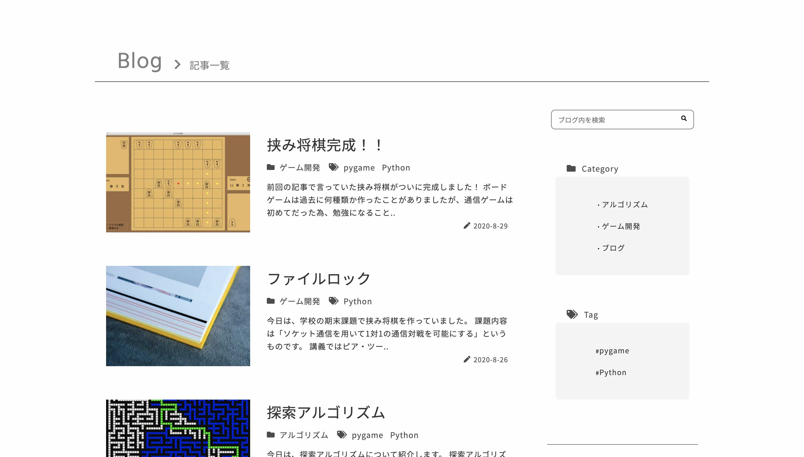
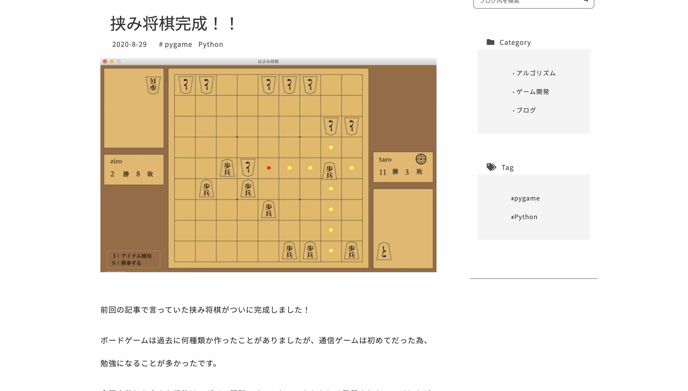
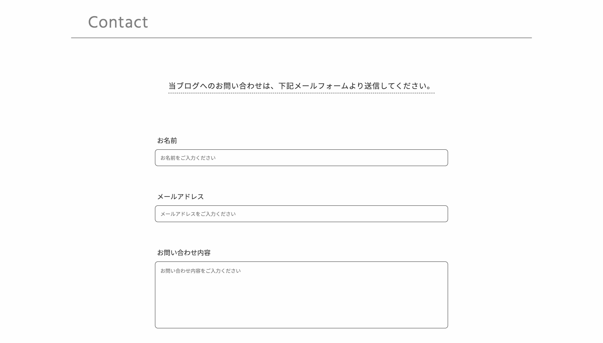
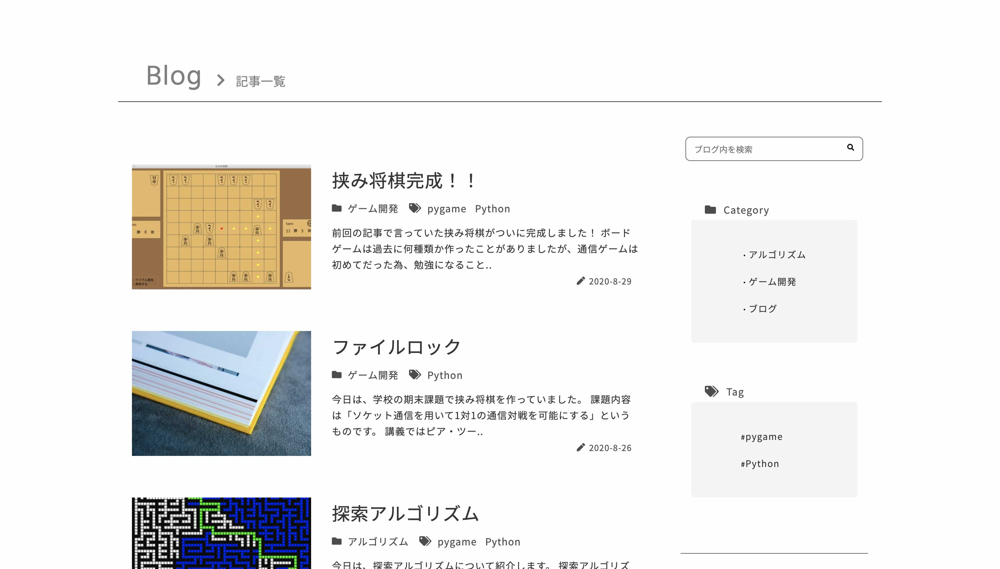
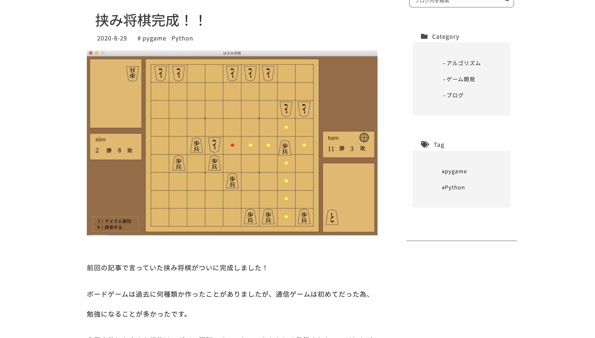
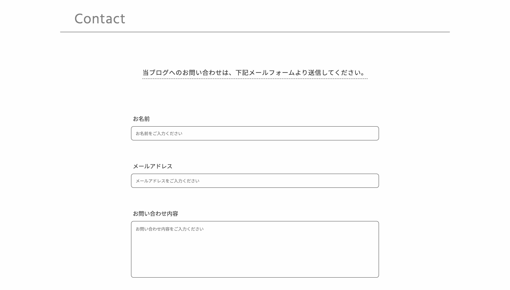
3M ローソン
エンジニアを目指す大学生の技術ブログです。 初学者目線で成長の記録を記事にします。 自分の勉強の記録になるのと同時に、 同じような初学者の方の参考に少しでもなればなと思います。 ブログではカテゴリー・タグ機能をつけたので、 目的にあった記事を探しやすくなっています。
| target | 自分と同じようなプログラミング初学者の方 |
| opinion | 自身の勉強記録 |
| concept | 日々の勉強で得た気付きを記録する |
1M いそのだっぺよ
初めての一人暮らしで洗濯の仕方が分からない、 という学生に向けて一から洗濯について知ってもらい、 より充実した生活を送ってもらいたいという思いのもと制作しました。 情報量が多く文章が長くなってしまうため、 PC版ではスプリットデザインを用いて視覚的にも読みやすく、 楽しめるようなWebサイトに仕上げた点が見所です。
| target | 一人暮らしをはじめる学生 |
| opinion | 目的 |
| concept | 洗濯から生活を豊かに |
 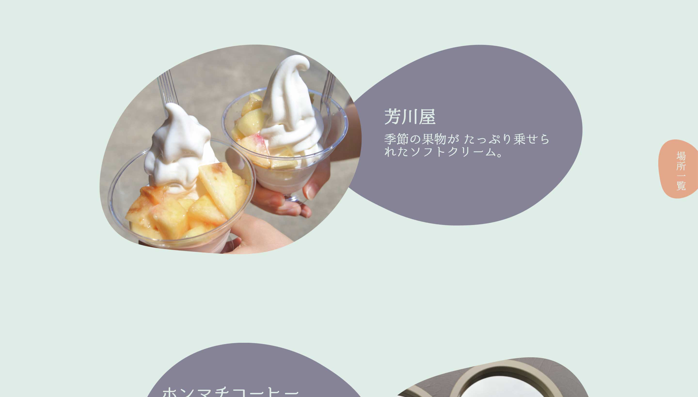
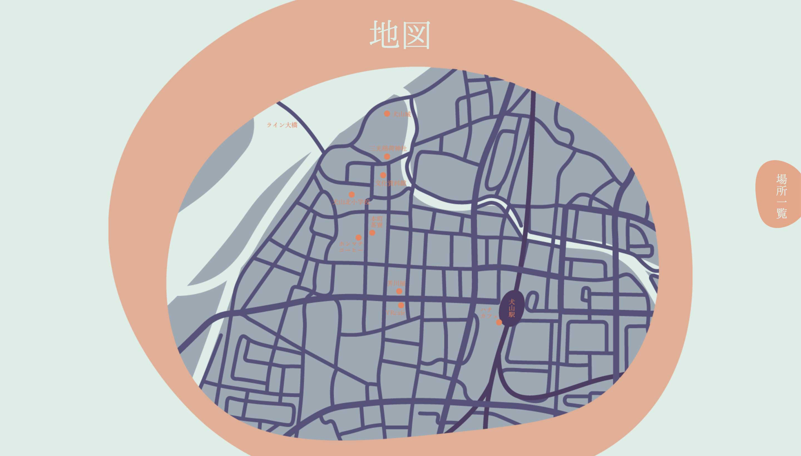
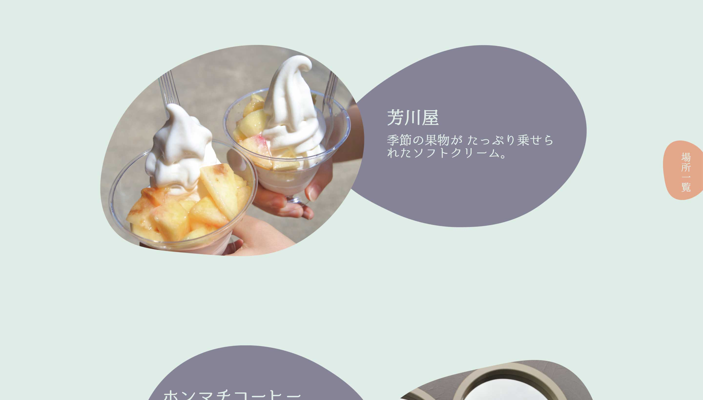
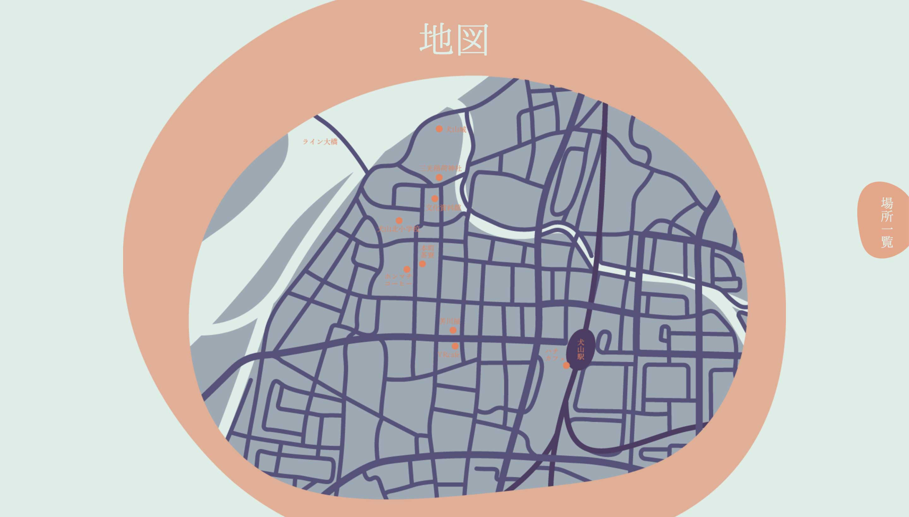
1M かなりミモザ
自分の地元である犬山の写真映えするカフェや観光地をまとめました。 写真のトリミングの形と、スクロールに合わせて紹介が表示される アニメーションをつけた点をこだわりました。 見づらい点もあると思いますが、気になる写真映えスポットを ひとつでも見つけていただけたら幸いです。
| target | Instagram等のSNSを利用している若い女性 |
| opinion | 犬山の写真映えするスポットをまとめる |
| concept | コンセプト |
1M 森殺
硬く太い女性の髪に焦点を絞り、 髪質別にその特徴と、オススメのヘアスタイルや お手入れ方法をまとめました。忙しい女性が、 自分の髪に悩む時間を減らすきっかけを作りたいと思い、このサイトを制作しました。
| target | 髪質に悩む女性 |
| opinion | 自分の髪との付き合い方を伝える |
| concept | 髪と向き合う |
1M ネッコアラ
予定やタスクをデジタルで管理するのは少し味気ない。 スケジュールのアナログ管理に魅力を感じるけれど、 何から始めれば良いのかわからない。そんな時に最適な手帳の 制作手順やポイントを簡単に伝えることで、より多くの人に 挑戦してもらいたいと思い、制作しました。 2ページにわたるサイト全体のデザインを少し洒落た感じにしたかったので、 特に色にこだわりました。PC版のデザインが気に入っているので、 ぜひPCで見ていただきたいです。
| target | オリジナルにこだわりたい学生・新社会人 |
| opinion | オリジナルのスケジュール帳について知ってもらう |
| concept | するをカタチに。 |
1M Edenの林檎
世界の色々な遊びをまとめたサイトです。 身の回りにあるものを用いる遊び、 もしくは何も無くても遊ぶことができる遊びを掲載しました。 日本の遊びに飽きたり少し変わった遊びをしたい方にはピッタリのサイトです。
| target | 小学生、少し変わった遊びをしたい人 |
| opinion | 色々な遊びを楽しむこと |
| concept | 遊びの引き出しを増やすこと |
4M かまぼこ・3M ローソン
名市大軽音部のコマ予約（部室での練習日予約）を管理するWebアプリ。部内の現状の課題を整理し企画・設計から考えました。主な目的はこれまでよりもコマの予約を管理しやすくすることですが、バンドの結成、正規コマ（定期練習日）の確認も行える仕組みを実装しています。 展示中のアプリは開発中のデモで、来年度から部内での運用を目標としています。
| target | 名市大軽音部員 |
| opinion | 煩雑なコマ管理による部員へのストレスの低減 |
| concept | コマ管理の見える化 |
※アプリはパソコンではご覧いただけません。
アプリを見る 卓展サイトTOPへ
卓展サイトTOPへ